― イベント報告 ―
-
■第１９回 秋の縄文野焼き祭り（平成２６年度）
【開催日】２０１４年１０月１２日（日） -
■第29回国民文化祭・あきた2014【ＪＯＭＯＮ ＡＲＴフェスタ】にて猪風来ら特別鼎談
【日 時】２０１４年１０月５日（日）午前１０：００～１２：００ -
■芸術新潮 現代の縄文土器を野で焼く『猪風来の豊饒世界』
【掲載号】「芸術新潮」２０１４年７月号 -
■日本初の快挙！ 国宝「中空土偶」漆塗装技法と縄文ベンガラ技法の解明
―“縄文の赤”の美をはじめて再現―
【函館市縄文文化交流センターの公式ページで論文公開】
【研究成果の公開展示】２０１４年５月２０日（火）～６月８日（日） -
■第１８回 春の縄文野焼き祭り（平成２６年度）
吹き抜ける風の気配 ホ～イ 縄文の風小僧よ！
【開催日】２０１４年４月２７日（日） -
■ARTs of JOMON in AOMORI に猪風来作品『縄文山河』『ウフィカムイ』など展示！
【会 場】青森県立美術館コミュニティーギャラリー
【期 間】２０１４年２月１４日（金）～２月２３日（日） -
■別冊太陽『縄文の力』 「縄文の美の発見者たち」猪風来
【掲載号】「縄文の力（別冊太陽 日本のこころ 212）」２０１３年１０月 -
■「縄文の造形美に迫る！」縄文アーティスト猪風来と考古学者小林達雄氏の対談
【掲載号】JR東日本発行『トランヴェール』２０１３年５月号 -
■北の縄文道民会議シンポジウム－猪風来講演と対談
【日 時】２０１３年３月２日（土）午後２時～５時
【会 場】札幌国際ビル８階 国際ホール（札幌市中央区北４条西４丁目） -
■猪風来 ＮＨＫ日曜美術館『土偶 命の息吹から生まれたアート』に出演！
【放送日】ＮＨＫ Ｅテレ １０月１４日（日）午前９時～９時４５分
【再放送】 １０月２１日（日）午後８時～８時４５分 -
■縄文咄咄 現代縄文アート展 in 新潟県津南町
【会 場】新潟県津南町 農と縄文の体験実習館「なじょもん」
【期 間】２０１２年７月１４日（土）～８月１９日（日） -
■英国の陶芸誌に猪風来登場！
【掲載号】「CERAMIC REVIEW」２０１２年７・８月号
| 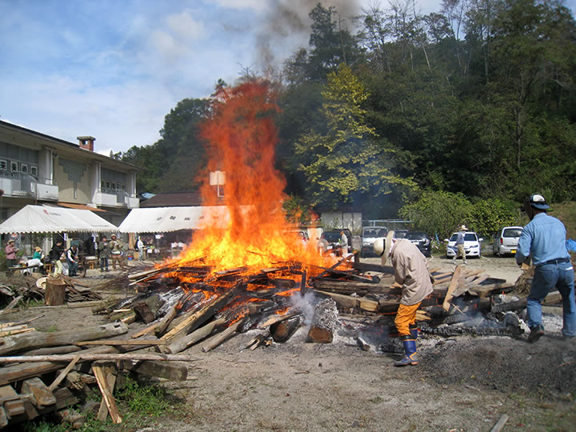 |
台風19号直前に無事終了！
=∴=∵=∴=∵=∴=∵=∴=∵=∴=∵=∴=∵=∴=∵=∴=∵=∴=∵=∴=∵=∴=∵=∴=∵=∴=∵=∴=
《巨大台風の大渦通過直前、縄文の炎渦巻く》
大型台風19号が南海に控えて、天気が心配された10月12日縄文野焼き当日。
早朝５時のまだ暗いときから野炉に火が入れられ、野焼きがスタートしました。
今回焼くのは120点の土器や土偶作品。
あたりが明るくなった頃にあぶり焼きが始まります。
見事な縄文造形の施された土器や、小学生らによる愛らしい土偶・土笛などの作品が火の周りに並べられます。
曇り空から薄日がもれて、今日の野焼きも順調に進みそうな予感。
火にあぶられ熱くなった作品を火床の真ん中に入れ、周りに木を積んで徐々に火力を上げてゆきます。
| 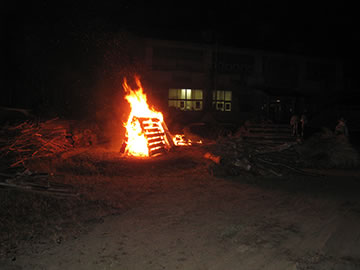 | 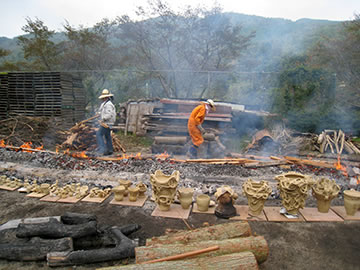 |

|

|
温度が上がるにしたがって、土肌がだんだんと濃い焦げ茶から黒へと変わります。
小さい作品は一足先に赤くなり、温度はすでに650度にまで達している様子。
ここから一気に材木を積みあげると炎が作品をおおい、大きな火柱が立ち昇ります。
温度は900度を超えています。
野焼きスタッフも必死の表情。
| 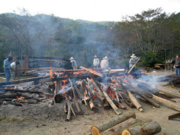 |  |

|
|
燃え尽きた木が落ちてくると、火のパワーが宿った力強い作品が姿を現わします。
すべての作品がパーフェクトな焼き上がりです。
野焼きを助けてくれた天と地と火に感謝。
そしていくつかの作品をススキで黒く燻して、野焼きは完了しました。
| 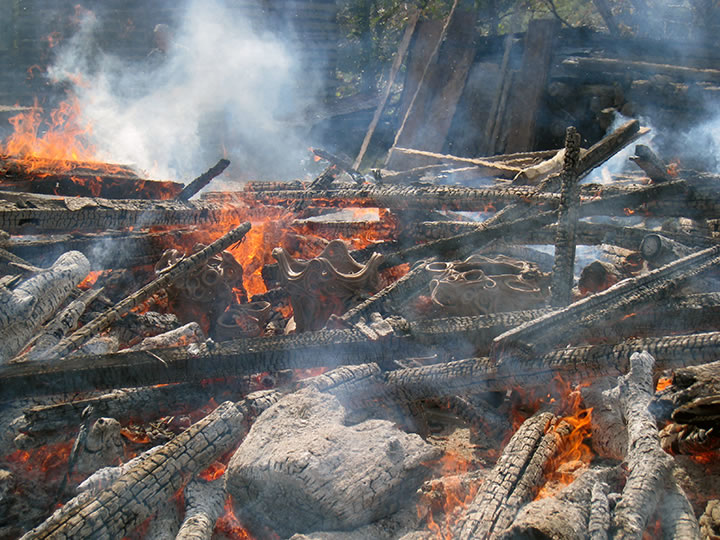 | |
| 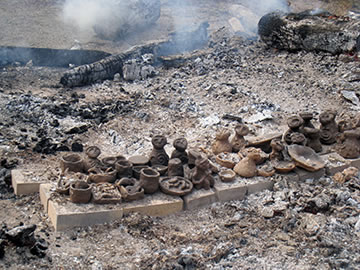 |

|
今回はこれまでにも増してバラエティに富んだ方々の参加がありました。
「縄文」に興味と魅力を感じる人びとが増えているのを感じます。
県内はもとより、遠く東京や広島など各地から駆けつけてくれた約100名が縄文野焼きの醍醐味を体感しました。
縄文に共感する映画監督やアーティスト、染色家、写真家、教育者などをはじめ、縄文野焼きを一目見たい、
体験したいという老若男女が縄文の炎の周りに集いました。
日本古来の文化的根源として世界的に注目されている「縄文」。
自然と共生し、生と死と再生への畏怖と祈りの世界観が表現された縄文の造形。
猪風来美術館は開館以来、現代創作縄文作品の展示とともに、縄文スピリットにもとづいた陶芸教室と縄文
野焼き祭りを主要な活動として展開してきました。
その結果として、ここ新見市法曽の猪風来美術館が現代縄文アートの発祥地として、多くの注目を集めてきて
いるのを実感しております。
=∴=∵=∴=∵=∴=∵=∴=∵=∴=∵=∴=∵=∴=∵=∴=∵=∴=∵=∴=∵=∴=∵=∴=∵=∴=∵=∴=
《縄文野焼き大賞》
 |
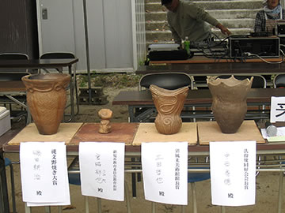 |
焼き上がった作品の中から縄文スピリットあふれる優れた作品を選び表彰しました。
受賞者（敬称略）
○縄文野焼き大賞
縄文土器 磯田 耕治(いそだ こうじ) 新見市大佐永富
○縄文野焼き新見市教育長賞
縄文土偶鈴 宮脇 郁也(みやわき ゆうや) 哲多町本郷小４年
○縄文野焼き法曽焼同好会会長賞
縄文土器 中西 秀徳(なかにし ひでのり) 倉敷市
○縄文野焼き猪風来美術館館長賞
縄文土器 土田 哲也(つちだ てつや) 新見市哲西町矢田
 |

|
| 【縄文野焼き大賞】縄文土器 | 【縄文野焼き新見市教育長賞】縄文土偶鈴 |
 |
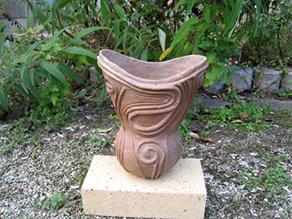 |
| 【縄文野焼き法曽焼同好会会長賞】縄文土器 | 【縄文野焼き猪風来美術館館長賞】縄文土器 |
=∴=∵=∴=∵=∴=∵=∴=∵=∴=∵=∴=∵=∴=∵=∴=∵=∴=∵=∴=∵=∴=∵=∴=∵=∴=∵=∴=
《縄文体験コーナー》
～縄文土器で煮炊き～
初めにでんぷんを土器の内側にまんべんなく塗っておきます。
周りに薪をおいて火を焚き、土器が熱くなってから水を注ぎこみ、沸騰してきたら野菜や肉を入れます。
トラブルもありましたが、お手伝いしてくれる方々に助けられて無事に出来上がりました。
この日はタカキビ粉を使った団子汁。
みんなで土器料理の味を堪能しました。
| 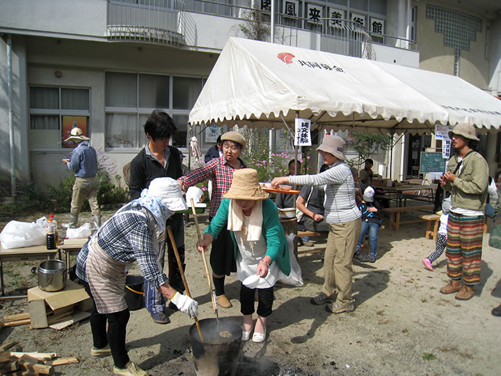 |
～粘土でつくろう・石で勾玉をつくろう～
土偶や小さい器などをつくる縄文粘土体験。
作品に縄を転がして縄文をほどこすと、見事な縄文作品の出来上がり！
黒やピンクや白の石での勾玉作り。
滑石を紙やすりでこすって丸く加工し、思い思いのすてきな勾玉に仕上げます。
勾玉は豊饒を祈る命のカタチ。若い人にも人気が高い体験です。

|
=∴=∵=∴=∵=∴=∵=∴=∵=∴=∵=∴=∵=∴=∵=∴=∵=∴=∵=∴=∵=∴=∵=∴=∵=∴=∵=∴=
《販売コーナー》
法曽焼同好会地元会員による販売コーナーでは、昼食としてうどんや猪カレーうどん、猪カレーライスや
飲み物などを販売しました。
また、地元産品として法曽茶と法曽焼き茶碗、ピオーネも並びました。

|
=∴=∵=∴=∵=∴=∵=∴=∵=∴=∵=∴=∵=∴=∵=∴=∵=∴=∵=∴=∵=∴=∵=∴=∵=∴=∵=∴=

|

|
| 【第１７回「秋の縄文野焼き祭り」チラシ】 →（表面）PDF版を開く →（裏面）PDF版を開く |
| 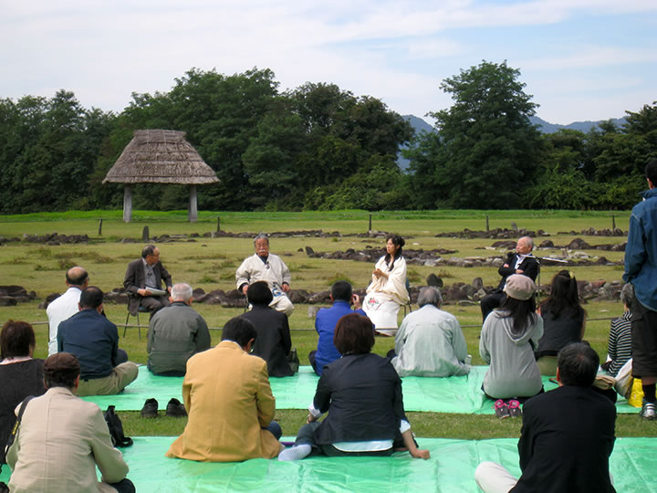 | ||
| 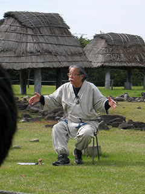 |

|

|
「秋田の縄文を世界遺産に」との主旨で、秋田県の大湯環状列石を祭場として縄文アートフェスタが開かれま
した。
直径52ｍ、7200個の石英閃緑ヒン岩を運んで石座にストーンサークルを創造した縄文人たち。
夏至の日没方向を指し示す日時計状組石などに見る縄文人の見事な造形力。
この遺跡の中を場として「ＪＯＭＯＮのココロとカタチ」と題した特別鼎談。
小林達雄(国学院大学名誉教授)、猪風来(縄文造形家)、神谷美保子(桜月流美剱道)の三者による、いまを生きる
現代人が縄文スピリットを学ぶ文化磁場として遺跡が生かされてゆく方向性を示す鼎談となり、各地から集まっ
た多くの人が耳を傾けました。
=∴=∵=∴=∵=∴=∵=∴=∵=∴=∵=∴=∵=∴=∵=∴=∵=∴=∵=∴=∵=∴=∵=∴=∵=∴=∵=∴=
特別鼎談
『ＪＯＭＯＮのココロとカタチ』
■ゲスト： 小林達雄(国学院大学名誉教授) × 猪風来(縄文造形家) × 神谷美保子(桜月流美剱道)
■日 時： １０月５日（日）午前１０：００～１２：００
■会 場： 大湯環状列石（大湯ストーンサークル館）

|

|
| 【第29回国民文化祭・あきた2014『ＪＯＭＯＮ ＡＲＴフェスタ』チラシ】 →PDF版を開く |
ＪＯＭＯＮ ＡＲＴフェスタ
■日 程：
（１）平成26年10月４日（土）～５日（日）
◆イベント・・・・・・大湯環状列石（大湯ストーンサークル館）
◆特別公開・・・・・・伊勢堂岱遺跡
（２）平成26年10月４日（土）～11月３日（月・祝）
◆土偶展・・・・・・・大湯環状列石（大湯ストーンサークル館）
■会 場： 大湯環状列石（鹿角市）、伊勢堂岱遺跡（北秋田市）
■担 当： 秋田県教育庁生涯学習課文化財保護室


|
芸術新潮２０１４年７月号で、猪風来美術館と春の縄文野焼き祭りを取り上げた『現代の縄文土器を野で焼く
猪風来の豊饒世界』が掲載されました。
空にたちのぼる炎が縄文土器に生命を宿す、縄文の真髄である野焼き。
そこに体現される猪風来縄文スパイラルのゆたかな造形美と精神世界に迫る。
縄文野焼きの一部始終を目撃し作品が生まれ出る瞬間に立ち会った記者の綴るルポルタージュです。
文：草刈朋子 写真：廣川慶明
=∴=∵=∴=∵=∴=∵=∴=∵=∴=∵=∴=∵=∴=∵=∴=∵=∴=∵=∴=∵=∴=∵=∴=∵=∴=∵=∴=

|
縄文造形家であり縄文赤漆研究家である猪風来は、国宝である中空土偶（函館市著保内野遺跡出土）の
赤漆塗装の解明に取り組んできました。
その成果を纏めた論文【「国宝土偶」（中空土偶）の漆塗装と縄文の赤漆に関する実験考古学的研究】が、
このたび函館市の公募事業「平成25年度 縄文文化特別研究」として発表されました。
現在、函館市縄文文化交流センターの公式ページで公開されております。
| 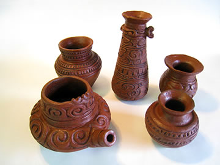 |

|
国宝である中空土偶（函館市著保内野遺跡出土）には、本来黒漆と赤漆が塗装されていましたが、漆はわずか
しか残存せず、ほとんど剥がれた状態で出土しました。
この剥離した漆塗装は、あえて剥離を前提として（祭式のために）計画的に塗装されたものである、という説
が提唱されていました。
このことが「縄文土偶祭式の不思議」として、考古学的な解明が求められてきました。
また、赤漆に用いられた赤土ベンガラにも謎がありました。
縄文時代に赤土ベンガラがどのような技法で生産されていたのか、これまで多くの考古学者が再現を試み
ながらも明確な実証に至らず、課題とされてきました。
こうした“縄文の赤”の美の秘密を解明する、縄文の技法による再現がはじめて成功をおさめました。
論文では、猪風来による成果の詳細な経過と結果が纏められています。
縄文赤土ベンガラの生産実験においては、岡山県吹屋で採取された天然黄土を、縄文野焼きで1000℃焼成
することによって、高純度のベンガラ（酸化鉄(Ⅲ)・酸化第二鉄）の精製に成功。
また、生産した赤土ベンガラと生漆（備中漆）を混合した赤漆を用いた赤漆塗縄文土器の作成に成功しました。
これは、天然原料と縄文の技法を徹底した実験考古学的成果の確立となります。
中空土偶の漆塗装の計画的剥離実験においても、縄文時代に存在しうる塗装技術の追求によって、剥離状況の
再現実験に成功。
縄文人の土偶をもちいた祭式儀礼を解明する端緒を開きました。
こうした成果は、縄文時代の赤漆の「心と技」を解明する考古学上の大きな手がかりを提示するものです。

|
|
| （画像をクリックで拡大します） | |
熱い野焼き！ 熱い思い！ 熱い縄文！
うす雲からときおり太陽が顔をのぞかせ、風小僧がそこかしこにつむじ風を渦巻かせる。
４月２７日野焼き当日、心配されていた雨もなく、絶好の野焼き日和！
=∴=∵=∴=∵=∴=∵=∴=∵=∴=∵=∴=∵=∴=∵=∴=∵=∴=∵=∴=∵=∴=∵=∴=∵=∴=∵=∴=
《縄文野焼き》
早朝から、野炉を暖めるために火が入れられ野焼きがスタート。
今回焼く約60点の作品が火の周りに並べられる。
あぶり焼きでまんべんなく暖められて、手が触れられないほど熱くなった頃に火床も出来上がり、作品を真ん中に入れます。

|

|

|
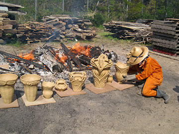 |

|
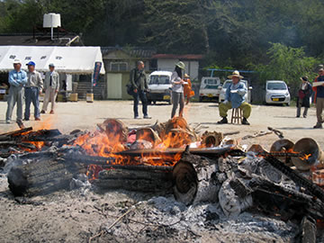 |
| （画像をクリックで拡大します） | |
外側に木を積んで徐々に火力が上がってゆく。
作品がほんのりと黒く色づきはじめ、段々と濃い焦げ茶に変化してくるまで、火を大きく育てます。

|

|

|

|
| 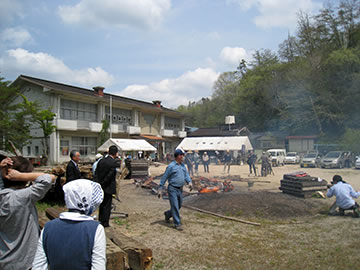 | 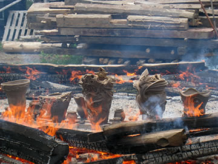 |

|
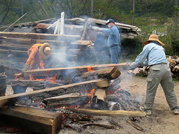 |
| （画像をクリックで拡大します） | |
頃合いを見て一気に木を積み、炎が作品を覆いつつむクライマックス！
900度を超える熱に、野焼きスタッフの髪もチリチリと焦げるほど。
大きな火柱が風にうねり、火竜になって天に昇ってゆきます。

|
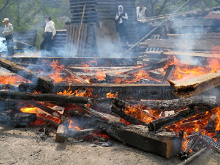 |

|

|

|

|

| |
| （画像をクリックで拡大します） | |
燃えきった材木が落ちて、その中から火のパワーを宿した作品が姿を現します。
どれも割れひとつない見事な焼き上がりです。
いくつかは更にススキでいぶし焼きにし、黒くひかる仕上がりに。
こうして野焼きは天気の味方もあり、見事大成功に終わりました。
| 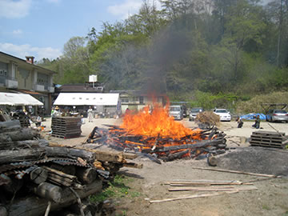 | 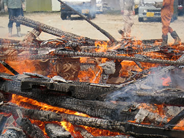 |

|
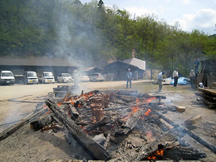 |

|

|
| 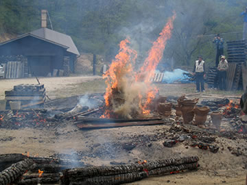 |

|
| （画像をクリックで拡大します） | |
県内はもとより、遠く秋田・東京・福岡・徳島など各地から、前日や早朝のうちから人が駆けつけてくれました。
当日は約150名が縄文野焼きの醍醐味を堪能。
今回は特に、縄文に興味をもつ陶芸家や現代アーティスト、芸大生などの参加がありました。
これまでにも増して広域からの参加があり、「縄文」に興味と魅力を感じる人びとが増えているのを感じます。
日本古来の文化的根源であり、自然と共生し、生と死と再生への畏怖と祈りの世界観が表現された縄文の造形。
アートの始原に魅せられ、現代縄文アートとして新たな創作に意欲をもつ多くの人々の注目がいま、
猪風来美術館へと向かってきているのを実感します。
| 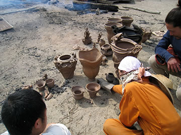 | 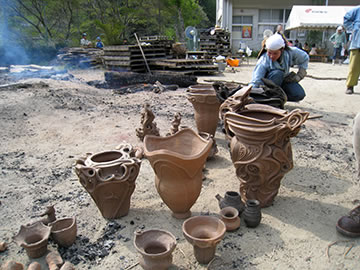 |
| （画像をクリックで拡大します） | |
=∴=∵=∴=∵=∴=∵=∴=∵=∴=∵=∴=∵=∴=∵=∴=∵=∴=∵=∴=∵=∴=∵=∴=∵=∴=∵=∴=
《縄文体験コーナー》
～縄文土器で煮炊きをしよう～
２つの土器で煮炊きをしました。
何年も煮炊きに堪えて年季の入った、風格ある土器を土にすえる。
周りに薪をおいて野焼きの火を移して焚き、土器をカンカンに暖めて水をいれます。
しっかりと沸騰したところで材料を入れて煮込みます。
今回はタカキビ粉を使った団子汁。
みんなで野性的な味に舌鼓を打って楽しみました。
| 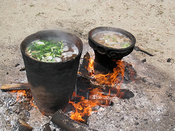 | 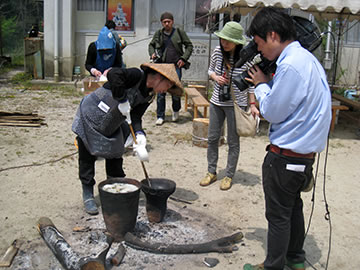 |
| （画像をクリックで拡大します） | |
～粘土でつくろう・石で勾玉をつくろう～
土偶や小さい土器など、創意あふれる作品に挑戦！
縄を転がして縄文を施し、丁寧に文様を入れるほどに魂がこもって縄文らしいマジカルな雰囲気に。
黒や白、ピンクの石からいろんな勾玉が出来上がりました。
天然の石の中に隠された思わぬ色が現れてきて素敵な勾玉に。
丸々した形や角ばったものまで様々な勾玉のペンダントの出来上がり。
子供から年配の方々まで和気あいあいの体験となりました。
| 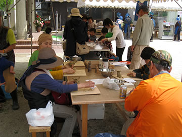 |

|

|
|
| （画像をクリックで拡大します） | |
=∴=∵=∴=∵=∴=∵=∴=∵=∴=∵=∴=∵=∴=∵=∴=∵=∴=∵=∴=∵=∴=∵=∴=∵=∴=∵=∴=
《販売コーナー》
法曽焼同好会地元会員による販売コーナーでは、昼食として「いのししカレー」「チキンカレー」などが
用意されました。
特にいのししカレーが好評でほとんど完売。
野焼きスタッフのエネルギー補充にもばっちり。
また、地元産品として「法曽茶」と「法曽焼き茶碗」も販売されました。
《いのりの土偶づくり》
昨年に引き続き、大震災に心を寄せる「いのりの土偶づくり」がおこなわれました。
みなさんのご協力ありがとうございました。

|
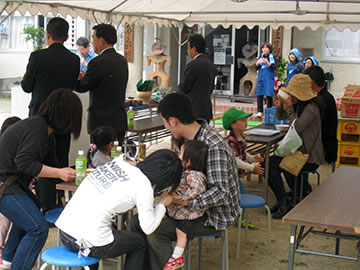 |
| （画像をクリックで拡大します） | |
=∴=∵=∴=∵=∴=∵=∴=∵=∴=∵=∴=∵=∴=∵=∴=∵=∴=∵=∴=∵=∴=∵=∴=∵=∴=∵=∴=

|

|
| 【「第18回 春の縄文野焼き祭り」チラシ】 →（表面）PDF版を開く →（裏面）PDF版を開く |

|

|
青森県立美術館で開催される『ARTs of JOMON』展は、猪風来をはじめとする現代の縄文アーティスト
が結集！
大作『縄文山河』『ウフィカムイ(火神)』や『土夢華シリーズ』、そして『縄文スパイラル文様画』など
猪風来の代表作が３展示室のうち「縄文ルネサンス」室の空間を埋め尽くします。
様々な縄文アーティストたちの多彩な展示や、ワークショップなども開催され、大きな反響を呼びました。
=∴=∵=∴=∵=∴=∵=∴=∵=∴=∵=∴=∵=∴=∵=∴=∵=∴=∵=∴=∵=∴=∵=∴=∵=∴=∵=∴=
縄文文化にインスピレーションを受けたアート作品が青森に凱旋！
ニューヨーク・hpgrpギャラリー、フランス・Japan Expoと、現代アートを切り口に縄文文化の魅力を世界に
発信した“ARTs of JOMON”が青森にやって来ます！
今回の展示会では、タレント・片桐仁氏と本県のタイアップにより制作された「縄文三部作」を始めとする
作品のほか、全長８メートルという圧倒的な迫力を持つ猪風来氏の「縄文山河」などの新たな作品を加え、
“ARTs of JOMON”の集大成となる展示を行います。
気鋭のアーティストたちが造形物・絵画・CGといったさまざまな手法で表現する現代縄文アートをぜひ
お楽しみください！

|
 |
| 【ARTs of JOMON チラシ】 →PDF版を開く |
 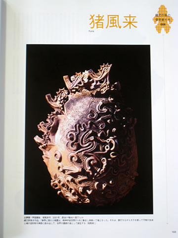
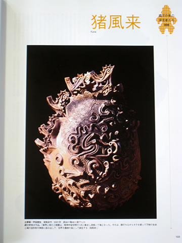
|
このたび平凡社から出版された《別冊太陽》の縄文特集号『縄文の力』。
「縄文の美の発見者たち」の章では、菅江真澄、エドワード・Ｓ・モース、山内清男、岡本太郎や
セインズベリー夫妻、そして猪風来の六人が取りあげられています。
世界の考古学者や蒐集家、そして芸術家。
縄文の“美”を見いだして世に知らしめ、縄文史にその足跡を刻んだ「発見者」たち。
六人の中で唯一今に生きる猪風来が、現代縄文アーティストとして縄文の“美”の心と技を体得するに至る
道程と、その表現の真髄を綴った寄稿文と作品が掲載されています。
=∴=∵=∴=∵=∴=∵=∴=∵=∴=∵=∴=∵=∴=∵=∴=∵=∴=∵=∴=∵=∴=∵=∴=∵=∴=∵=∴=
→ 縄文の力（別冊太陽 日本のこころ 212） (平凡社図書目録 詳細ページ)
――奇想的で過剰とも見えるほど独特の形態をした土器、森羅万象が息づく精霊を宿した不思議な土偶たち、
聖なる場に造られた遺跡の数々。現代人の心を揺さぶる縄文パワーの謎に迫る！

|
現代縄文造形の第一人者猪風来と縄文研究の第一人者小林達雄氏の対談が、「縄文の造形美に迫る！」と題して、
JR東日本の新幹線車内サービス誌『トランヴェール』５月号に収録されています。
この号では「感性に響く！縄文の旅」というテーマで、東日本の縄文文化や様々な土器・土偶を紹介する
とともに、現在世界的に注目を集めている縄文造形デザインの美にもスポットを当てた内容となっています。
東北・山形・秋田・上越・長野新幹線にご乗車の際は、ぜひお手に取ってご覧ください。
=∴=∵=∴=∵=∴=∵=∴=∵=∴=∵=∴=∵=∴=∵=∴=∵=∴=∵=∴=∵=∴=∵=∴=∵=∴=∵=∴=
発行：東日本旅客鉄道株式会社
企画・編集・発売：ジェイアール東日本企画 トランヴェール編集部
 |
|
 |
|
【講演内容全文】
→ 2013年3月2日 道民会議シンポジウム／基調講演 猪風来氏 (北の縄文道民会議 公式サイト)
→ 道民会議シンポジウム、無事終了しました (北の縄文道民会議 公式サイト)
→ 北の縄文道民会議シンポジウム 開催の模様 (北海道庁 公式サイト)
第一部では『縄文造形は人類の根源美―新しい現代縄文芸術の発展のために―』というテーマで猪風来が
基調講演をおこないました。
第二部では『縄文から未来へ～世界遺産登録に向けて～』というテーマで、阿部千春氏
（函館市縄文文化交流センター館長）と猪風来の対談。
また茂呂剛伸氏（ジャンベ太鼓・縄文演奏家）による縄文太鼓演奏もおこなわれました。
 |
 |
| 【『北の縄文道民会議シンポジウム』チラシ】 →（表面）PDF版を開く →（裏面）PDF版を開く |
| 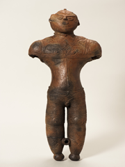 |

|
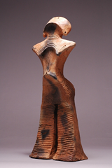 |

|
近年続く縄文ブーム、その中でもいま『土偶』に注目が集まっています。
2009年に大英博物館で開催された土偶展が大成功をおさめ、山形県で発掘された土偶が今年４月新たに国宝に
指定され話題となりました。
いま土偶の美術品としての美しさが見直されています。
縄文文様がダイナミックな表現として施された縄文土器が縄文アートとして定着していますが、土偶に着目する
と、デフォルメされた体型に精緻な文様がセンス良く施され実に絶妙なバランス感覚の美しさがきわだちます。

|
|
| 【中空土偶を再現制作する猪風来】 | 【インタビューの収録】 |
番組では『土偶』の魅力を美術の観点から解明すべくせまります。
猪風来は国宝に指定された縄文土偶４点の中のひとつ『中空土偶』（函館市著保内野遺跡出土・高さ41.5㎝）
を選んで再現。
縄文時代と同じ製法で山野から採集した粘土を精製、練り上げた縄文粘土をもちいて造形。
薄さ数ミリの中空の造形から縄文時代の高度なテクニック、土偶の細部の造形の微妙なひねりなどを確認。
また緻密な細かい文様のために、制作に必要な縄や竹管を作り、腕や頭部の欠損部分を補うために同じ形式の
土器や土偶からヒントを探します。
こうした中空土偶の再現制作・野焼き焼成の過程が撮影されています。
美術館に展示中の猪風来の現代創作土偶作品も番組内で紹介されました。
また、再現制作された中空土偶は現在、猪風来美術館にて展示しております。

|
縄文造形家・猪風来が、「火焔土器のくに」新潟は津南町で開催された現代縄文アート展『縄文咄咄』へ出品。
また、ワークショップで縄文土器づくりの指導と縄文野焼きの実演を披露しました。

|

|
| 【実習館「なじょもん」】 | 【展示会場入口】 |

|

|

|
|
| （画像をクリックで拡大します） | |
猪風来の開眼作『生命のシリーズ 出産』をはじめ、６人の作家が縄文をキーワードとした作品を出品。
出土したいにしえの縄文と現代の縄文アートによるコラボレーションです。
=∴=∵=∴=∵=∴=∵=∴=∵=∴=∵=∴=∵=∴=∵=∴=∵=∴=∵=∴=∵=∴=∵=∴=∵=∴=∵=∴=

|
|

|

|
| （画像をクリックで拡大します） | |
展示期間に先がけた、猪風来による体験教室のワークショップ。
新潟津南の子供たちが、地元の土から練り上げた縄文粘土を使って縄文土器づくりに挑戦！
=∴=∵=∴=∵=∴=∵=∴=∵=∴=∵=∴=∵=∴=∵=∴=∵=∴=∵=∴=∵=∴=∵=∴=∵=∴=∵=∴=

|

|
| （画像をクリックで拡大します） | |
竪穴式住居などを再現した、なじょもんの「縄文むら」の中心に野炉をつくり、地べたを焼いて翌日の
野焼きに備えます。
=∴=∵=∴=∵=∴=∵=∴=∵=∴=∵=∴=∵=∴=∵=∴=∵=∴=∵=∴=∵=∴=∵=∴=∵=∴=∵=∴=

|
|

|

|

|

|

|

|
| （画像をクリックで拡大します） | |
いよいよ野焼き当日！
乾燥させておいた子供達の縄文土器や、猪風来による火焔土夢華作品、村上原野による
津南出土の縄文土器の模写など約30点の縄文野焼きを実演。
真夏の熱い日差しの中、ヒビひとつない完璧な焼き上がりで作品たちが炎の中から生まれました。
子供たちも大喜びし、各地から訪れた見学者の方々も縄文野焼きの炎に見入っていました。
=∴=∵=∴=∵=∴=∵=∴=∵=∴=∵=∴=∵=∴=∵=∴=∵=∴=∵=∴=∵=∴=∵=∴=∵=∴=∵=∴=

|

|

|

|

|
|
| （画像をクリックで拡大します） | |
『縄文咄咄』出品作家６人が作品を前にギャラリートーク。
自らの縄文作品と、いにしえから現代、未来へとつながる縄文アートにかける各々の思いを披露しました。
=∴=∵=∴=∵=∴=∵=∴=∵=∴=∵=∴=∵=∴=∵=∴=∵=∴=∵=∴=∵=∴=∵=∴=∵=∴=∵=∴=

|
| 【縄文咄咄 ジョーモンアート展チラシ】 →（表面）PDF版を開く →（裏面）PDF版を開く |


|

|
このたび、英国の陶芸誌「CERAMIC REVIEW」７・８月号に猪風来とその作品が４ページにわたり
紹介されました。
題名は [Ancient Inspirations]（いにしえのインスピレーション）
記事を執筆したのは英国セインズベリー日本藝術研究所のサイモン・ケイナー博士。
ケイナー博士は2010年の英国 Unearthed 展のスペシャルワークショップに猪風来を招待し、その後
猪風来美術館に来館し猪風来の代表作に触れ、『現代の縄文アーティスト』として称賛しています。
本文より抜粋（翻訳）
=∴=∵=∴=∵=∴=∵=∴=∵=∴=∵=∴=∵=∴=∵=∴=∵=∴=∵=∴=∵=∴=∵=∴=∵=∴=∵=∴=
日本列島で最も広い本州西部の山間部に、旧小学校を利用した猪風来美術館があります。６５才の“猪風来”
は、漢字で猪が向かってくることによって巻き起こる風を意味しており、“縄文アーティスト”としての彼自身
を表わしています。大昔の日本の縄文時代には、猪、鹿、木の実のような野生の食べ物を糧としていた人々が、
いにしえの世界のもっとも優れた焼物を創造していました。彼はそんな縄文時代の焼物に触発され、驚くほど
美しい陶芸作品を創造します。
（中略）
1990年代後半から、彼は出産、縄文の女神やビーナスの概念、渦巻きや立体的で流れるような柔軟性のあ
る縄文のモチーフ、石が立っているような像、そして縄文の世界観（コスモロジー）、夜に猪風来美術館から
はっきり望むことのできる銀河のような天体に象徴される自然に抱かれ、さまざまなものに触発されながら作
品の展示を始めました。
（中略）
縄文にインスパイアされた野焼きと、窯で焼き上げられた陶器とのコンビネーションは、猪風来と日本のこ
の地域を、炎と焼物の新たな拠点として位置づけることとなったのです。
=∴=∵=∴=∵=∴=∵=∴=∵=∴=∵=∴=∵=∴=∵=∴=∵=∴=∵=∴=∵=∴=∵=∴=∵=∴=∵=∴=
目次の確認やご購入は、公式サイトより参照ください。
→ Ceramic Review Magazine (英語)